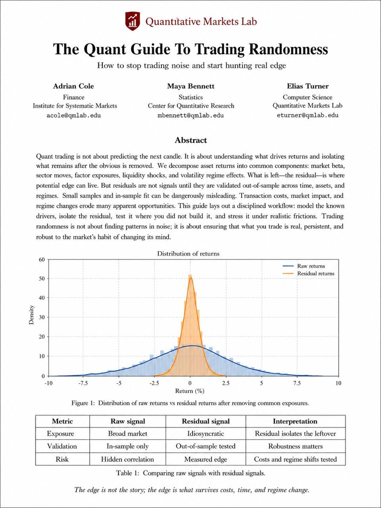

Residual thinking
Measure what remains after declared market, sector, and factor controls explain the obvious return.
A fail-closed promotion contract that asks one question: does a proposed edge survive known exposures, unseen time, realistic friction, and changing regimes?
The supplied image expresses a useful discipline. It does not provide enough provenance to act as empirical evidence. Market Lab should turn the discipline into an auditable promotion gate.
Measure what remains after declared market, sector, and factor controls explain the obvious return.
Use unseen periods, friction stress, and regime breakdowns before a strategy can reach paper review.
Do not cite the displayed chart, authors, affiliations, or density values as validated research.
The pipeline narrows a strategy from a broad idea to an independently reviewable paper candidate. Any broken evidence link stops promotion.
MANIFESTDATARESIDUALOOSNETSTABILITYEVIDENCEThis map is based on the active repository, not the image.
| Capability | Status | Observed state | Required delta |
|---|---|---|---|
| Execution timing | IMPLEMENTED | Close t decisions fill at next open. | Keep unchanged. |
| Benchmark awareness | PARTIAL | SPY-relative momentum guards and ranking exist. | Add general benchmark and sector controls. |
| Out-of-sample | PARTIAL | One deterministic train/OOS split exists. | Add repeated chronological folds and purge/embargo. |
| Friction | PARTIAL | Fixed slippage and commission exist. | Add stress scenarios, spread, turnover, and capacity flags. |
| Regime analysis | PARTIAL | Simple regime labels and post-trade diagnosis exist. | Require promotion stability by regime and segment. |
| Residual returns | MISSING | No general market/sector residual series. | Add an auditable rolling exposure model. |
| Promotion record | MISSING | No immutable, unified edge verdict gates paper eligibility. | Add versioned manifests and EdgeEvaluation. |
Every evaluation should produce one immutable record. A paper queue can later cite the record, but it can never bypass portfolio or risk gates.
EdgeEvaluation ├── strategy_id + strategy_version ├── manifest_sha256 + data_catalog_sha256 ├── benchmark_ids[] + control_ids[] ├── train_windows[] + oos_windows[] ├── raw_metrics + residual_metrics ├── cost_scenarios[] + regime_metrics[] ├── stability_metrics + multiple_test_count ├── quality_flags[] + gates[] └── verdict + blockers[] + next_owner + next_action
Evidence is incomplete or not strong enough for paper promotion.
All evidence gates pass. This status does not create an order.
A declared threshold or integrity rule failed.
Versioned manifest, immutable evaluation schema, pure fail-closed evaluator. No queue wiring.
Rolling market and sector exposures with synthetic-fixture recovery tests and no-lookahead checks.
Repeated walk-forward folds, stored boundaries, purge/embargo, and an overfit-failure fixture.
Baseline and stressed friction. Results by fold, symbol, sector, regime, and calendar period.
Only an approved, current, hash-matched evaluation can make a strategy paper-eligible.

The image shows a paper-like page titled The Quant Guide To Trading Randomness. It has no visible DOI, date, venue, references, or public source URL. The named authors, affiliations, and qmlab.edu emails are not independently verified.
Evidence grade: CONCEPT_ONLY
SHA-256:cad9b49cad2824557c1e021f1a11f91cdb0cadcd9be05d463c136a013c70b61f
Boundary: Adopt the workflow. Do not adopt the displayed empirical distribution or provenance claims.